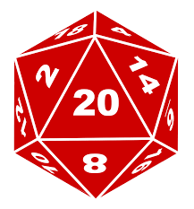
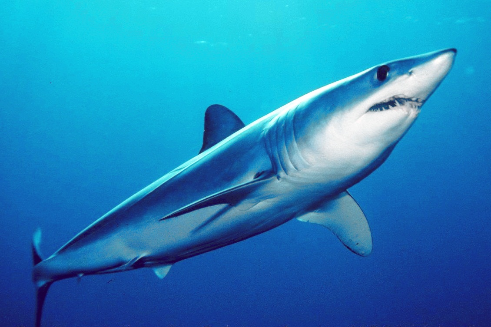

My name is Andrew Winder I was born and raised in Las Vegas, Nevada. Although most of my time is spent studying at BYU and working remotely for Fairway Independent Mortgage Corporation I have many interests I enjoy pursuing. Here are a few:
- Lego Star Wars
- Not only do I collect most sets from the Lego Star Wars brand but I also enjoy Lego Star Wars video games
- Dungeons & Dragons
- Ever since I was a young boy I loved reading and watching fantasy books and movies. In middle school I discovered Dungeons & Dragons and was hooked. I have played hundreds of games most often as the Dungeon Master. I have introduced and taught the games system to many people. Playing D & D is something I always look forward too. 
- Marine Biology
- I have always loved the ocean and marine creatures, specifically sharks. My favorite shark has to be the Shortfin Mako Shark.
- Swimming
- Whenever I can find the time I enjoy spending it in the pool. I competed in hight school as Varsity Mens Team Capitan and went to regionals every year. I enjoy swimming as a work out and a competition. I love the breaststroke and will avoid swimming backstroke if I can help it.
- Contact Me
- Phone Number: (777)777-7777
- Email: kitkatwhitechocolate@gmail.com

